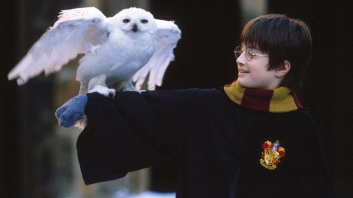
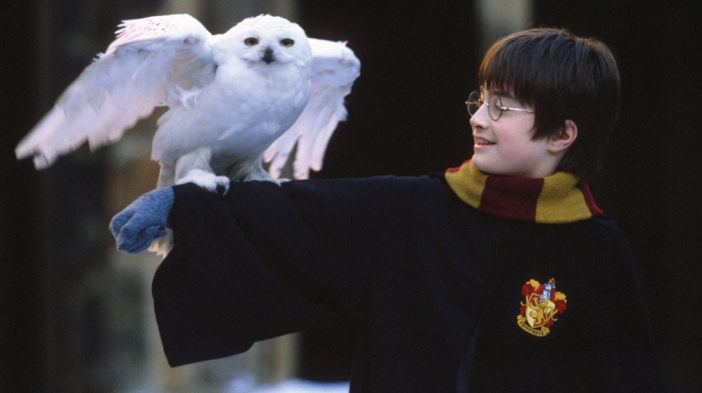

Livro 1
HARRY POTTER E A PEDRA FILOSOFAL

Resumo
Quando bebê, Harry Potter fora deixado na porta de seus tios maternos Petúnia Dursley (irmã mais velha de Lily) e Vernon Dursley. Harry cresceu na casa dos seus tios, que escondiam a verdade sobre sua família. Ao completar onze anos, Harry começa a receber cartas de um remetente desconhecido, que aumentam de quantidade à medida que seus tios as destroem. Quando finalmente consegue abrir uma delas, Harry descobre que possui poderes mágicos, como os seus pais, e que foi aceito na Escola de Magia e Bruxaria de Hogwarts.
Em seguida, é revelado que os Potter não morreram num acidente de carro, como sempre dito a Harry, mas assassinados por Lorde Voldemort, um dos maiores bruxos das trevas da história. Na noite do suposto acidente, Voldemort matou James e Lily Potter, porém, ao tentar matar Harry, perdeu sua forma física e deixou uma cicatriz em forma de raio na testa do menino.
Os Dursley tentam impedir que Harry vá para Hogwarts, até que Rubeus Hagrid, o guardião das chaves e dos terrenos da escola, aparece e o resgata. Eles compram os materiais escolares necessários no Beco Diagonal, onde o garoto descobre que é famoso dentro da comunidade bruxa por ter sobrevivido a uma tentativa de homicídio. Posteriormente, Harry embarca no trem que o leva até Hogwarts. Ao embarcar, ele conhece Ronald Weasley, um menino ruivo filho de bruxos, e Hermione Granger, uma filha de Muggles (pessoas não-bruxas) com grandes talentos acadêmicos. Os três se tornam amigos e, mais tarde, envolvem-se em uma série de episódios relacionados a um objeto escondido nas profundezas do castelo: a Pedra Filosofal, um artefato mágico capaz de transformar metal em ouro puro e produzir o elixir da vida eterna. Alguns fatos levantam a suspeita nos três garotos de que o professor Severus Snape estava tentando roubar a pedra para entregá-la a Voldemort.
Depois de confirmar que o espírito de Voldemort ronda o castelo e que a pedra se encontra em perigo, Harry, Ron e Hermione alertam os professores, que descartam tal possibilidade pelo fato do objeto estar protegido por várias armadilhas em uma câmara subterrânea. Consequentemente, os três garotos resolvem proteger a pedra sozinhos: atravessam um alçapão guardado por um cérbero e ultrapassam todos os obstáculos que protegem o objeto.
Posteriormente, Harry descobre que o professor Quirinus Quirrell era quem tentava roubar a pedra desde o início para o bruxo das trevas (que permanecia como um parasita na nuca do professor). Harry consegue pegar a pedra e Quirrell tenta matá-lo, porém é derrotado apenas pelo toque do garoto e morre quando Voldemort abandona seu corpo.
Poster do Filme
Trailer
Curiosidades
- J.K. Rowling escreveu o livro à mão em vários cafés em Edimburgo, na Escócia. Ela estava desempregada e vivia de benefícios do governo na época.
- O manuscrito original do livro foi rejeitado por várias editoras antes de ser finalmente aceito pela Bloomsbury. A editora pediu que Rowling usasse suas iniciais em vez de seu nome completo, Joanne Rowling, porque achavam que os meninos não comprariam um livro escrito por uma mulher.
- O título original do livro era "Harry Potter and the Philosopher's Stone". No entanto, para o mercado americano, a editora achou que "philosopher's stone" não era um termo que os leitores americanos entenderiam, então eles mudaram o título para "Harry Potter and the Sorcerer's Stone".
- Muitos dos nomes de personagens e lugares na série foram inspirados em lugares reais que Rowling conhecia. Por exemplo, o nome "Hogwarts" veio de um nome de lugar próximo à casa dos avós de Rowling, e o nome "Diagon Alley" é um jogo de palavras com "diagonally" (diagonalmente em inglês), porque é uma rua tortuosa.
Galeria de imagens

 
